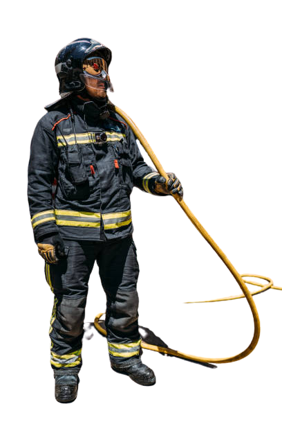

Contacto
Sacrificio, Abnegación, Desinteres

Preguntas Frecuentes
Tener 18 años.
Presentarse ante la Asociación de Bomberos Voluntarios más cercana al domicilio y consultar allí
vacantes y requisitos de inscripción para la formación como Bombero Voluntario
La formación de Aspirante a Bombero Voluntario tiene una duración mínima de 1 (un) año, la cual
puede ser mayor de acuerdo a cada provincia.
Luego de finalizar y aprobar la formación se obtiene la certificación y se presta juramento.
Si sos particular siempre podés pasar tanto por el Cuartel Central como por los Destacamentos de
Santos Tesei y Williams Morris y solicitarle al Cuartelero que te muestre las instalaciones, los
móviles y equipos con los que trabajamos y que te cuente cuales son nuestras tareas como bomberos.
Si sos maestra o profe y querés venir con tus alumnos también podes hacerlo. Para coordinar una
visita grupal tenés que presentar de forma presencial (en el Cuartel o Destacamento que quieras
visitar) una nota dirigida al Jefe de Cuerpo solicitando una visita al cuartel indicando los días y
horarios a realizarse. Es importante que en la misma nota se detalle el Colegio o Institución, el
grado del grupo y un teléfono de contacto.
Son obligaciones fundamentales de las Asociaciones de Bomberos
Voluntarios y sus integrantes activos, las siguientes:
a) prestar inmediato auxilio en los casos de incendio o acontecimientos provocados o
naturales que pongan en peligro la vida y/o los bienes de los habitantes de la provincia, sin
necesidad de requerimiento alguno por parte de las autoridades públicas;
b) prestar colaboración en tareas de prevención de incendios y de otras emergencias
públicas;
c) difundir en la población todo lo relacionado con prevención y lucha contra incendios;
d) fomentar la formación de asociaciones similares en los centros urbanos que carezcan de
esas entidades, proporcionando ayuda y asesoramiento;
e) disponer la concurrencia de los integrantes de sus cuerpos activos ante cualquier alarma
o pedido frente a las circunstancias determinadas en los incisos a) y b) de este Artículo,
salvo en caso de enfermedad o fuerza mayor debidamente justificadas.
Sobre Nosotros
Bombero es la persona que se dedica a extinguir incendios y rescatar personas en dicho caso y otros tipos de siniestros así como intervenir en la prevención de estos eventuales sucesos. Tradicionalmente realizan su trabajo mediante bombas hidráulicas, que se utilizaban para sacar agua de pozos, ríos o cualquier otro depósito.
Donde Encontrarnos
Pinamar
Valle fertil 635
Valeria del mar
Arcachon y corbeta